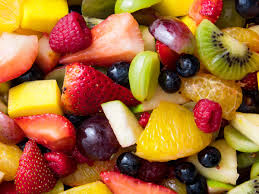
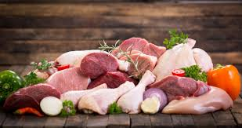

You can eat fruit, it's healthy.

You can also eat meat, it gives you strength and energy.

Protein is also beneficial
.jpg) Vegetables are also healthy and can be mixed with food for more flavor.
Fiber is very important for digestion
Vegetables are also healthy and can be mixed with food for more flavor.
Fiber is very important for digestion
.jpg) And the most important thing is water, you need to drink at least 2.5 liters of water per day.
And the most important thing is water, you need to drink at least 2.5 liters of water per day.